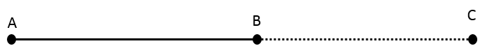
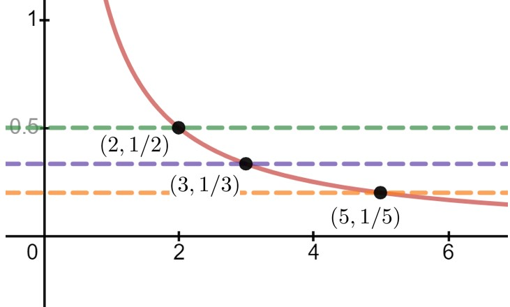

It all comes down to understanding infinity, both the infinitely small and the infinitely large. Or rather, it comes down to realizing that we do not understand infinity at all. So, whenever an apparently infinite quantity appears we will have to work with and explain it in finite terms. This might sound impossible, but it turns out to be merely difficult.
This approach is within well established mathematical tradition. From the time of the ancient Greeks until the sixteenth century, infinity was carefully excluded from serious mathematical consideration. It was the successful exploitation of the infinitely small (infinitesimals) by Galileo and others that eventually forced mathematicians to study infinity seriously.
Today we tend to conceive of a straight line in infinite terms; as extending infinitely far in two opposite directions. But when Euclid2
, he very carefully avoided allowing the existence of an infinite line. For Euclid a straight line was what today would be called a line segment: the shortest path between two points.
But this restriction immediately caused problems for Euclid. For some of his constructions he needed to be able to extend his line segment. In modern mathematics this is not a problem since we allow lines to extend infinitely far in either direction. So wed just move to a new point on the line wherever it needs to be.

But when Euclid specified a line segment \(\overline{AB}\) he meant that the points \(A\) and \(B\) were the endpoints of the line segment. To avoid infinite lines he extended the line segment \(\overline{AB}\) by some definite amount out to a point \(C\text{,}\) thereby obtaining a new segment \(\overline{AC}\text{,}\) which and this is the point is still finite in length. In this way Euclid explicitly allowed line segments to be extendable to any finite length without ever allowing an infinitely long line.
The Infinitely Large.
We want to ask, and answer, the question
What number does \(y\) get close to if \(y=\frac1x\) and we allow \(x\) to grow infinitely large?
as precisely as we can without invoking the notion of the infinitely large. Does this rephrasing work for you?
If \(y=\frac1x\text{,}\) what does \(y\) get close to as \(x\) grows larger and larger?
This seems to be better. We have side-stepped the issue of the infinitely large by saying larger and larger. But unfortunately this rephrasing of the question changes its meaning. To see what we mean, think of \(x\) as the radius of a balloon which we want to inflate as much as we possibly can. Suppose we know that when the radius of the balloon is \(8\) it will pop. To avoid popping our balloon, we blow in enough air during the first second to expand the radius to \(x(1)=4\text{.}\) In the next second we expand the radius to fill half of the remaining distance to \(x(2)=6\text{.}\) In the third we repeat the process, expanding it to \(x(3)=7\text{.}\) And we continue in this fashion. At each second the radius of our balloon expands to half of the remaining distance to \(8\text{.}\)
Clearly the balloons radius grows larger each second, so \(x\) grows larger and larger as required. But the intent of our original question was for \(x\) to become infinitely large, not for \(x\) to remain smaller than \(8\text{.}\)
And there is nothing special about \(8\text{.}\) If \(x\) moves half of the distance to \(16\) each second, or halfway to \(32\text{,}\) or even if it moves halfway to \(1,048,576\) at each step we have the same problem. In each case \(x\) is growing larger and larger but it is not growing in a manner that reflects what we think we mean when we say that \(x\) is growing infinitely large.
Problem17.2.0.1.
Suppose \(B\) is a positive real number, and that \(x(0)=0\text{.}\) Find a formula for \(x\) as a function of time \(t\) (in seconds), such that at each integer \(t>0\text{,}\) the distance from \(x(t)\) to \(B\) is half of the distance from \(x(t-1)\) to \(B\text{.}\)
In this situation \(x\) is said to be bounded above because there is an upper bound on how large \(x\) can be, despite the fact that \(x\) is growing larger and larger.
Recall that in Section12.1 we mentioned that the notation \(x\rightarrow\infty\) should be read aloud as \(x\) increases without bound, so we rephrase our question as
If \(y=\frac1x\text{,}\) what does \(y\) get close to as \(x\) increases without bound?
The Infinitely Small.
The answer is very clear: \(y\) gets closer and closer to zero. But of course, the phrase closer and closer is also too vague, and for essentially the same reason that larger and larger is too vague to be useful.
Again, it is not our conception of the problem that is the difficulty. It is the language were using. As before, we must choose our words more carefully.
To capture the idea that \(y=\frac1x\) gets closer and closer to zero, without ever getting to zero lets think this through, being careful to say exactly what we mean, no more, no less. To begin we ask, Is there a value of \(x\) which forces \(y\) to be less than, say \(1/2?\)
Keeping in mind that if \(a\lt b\) then \(\frac1a\gt\frac1b\text{,}\) if we need \(y\lt 1/2\) and \(y=1/x\) that means that \(1/x\lt 1/2\text{.}\) Solving for \(x\) we have \(x\gt 2\text{.}\)

So apparently any value of \(x\) strictly greater than \(2\) will guarantee that \(y\) is less than \(1/2\text{.}\)
Stop and think about that last sentence. Do you see that weve actually discovered more than the original question asked for? Our question was, Is there a value of \(x\) which forces \(y\) to be less than \(1/2\text{?}\) But weve actually found all of them. Weve found that if \(x\) is any number greater than \(2\) then \(y=\frac1x\lt \frac12,\) regardless of which number we use.
Can we make \(y\lt 1/3?\) Sure. Exactly the same analysis will show that if \(x\gt 3\text{,}\) then \(y=\frac1x\lt \frac13\text{,}\) or if \(x\gt 4\text{,}\) then \(y\lt 1/4\text{,}\) and so on.
Drill17.2.0.2.
If \(y=\frac1x\) how large must \(x\) be in order to guarantee that
(a)
\(y\lt 1/5\)
(b)
\(y\lt 1/10\)
(c)
\(y\lt 1/100\)
(d)
\(y\lt 1/1000000\)
It should be clear that we neednt have stopped at one millionth \(\left(10^{-6}\right)\text{.}\) The same argument will show that if we want \(y=\frac1x\lt 10^{-10},\) we need \(x\gt 10^{10}.\) And that if we want \(y=\frac1x\lt 10^{-1000},\) we need \(x\gt 10^{1000}.\)
So, by an appropriate choice of \(x\) we can make \(y=\frac1x\) as close to \(0\) as we choose. To be a little more precise we say that we can make \(y\) arbitrarily close to zero, even if it never actually is zero. And this is what we really intended when we said that \(y\) gets closer and closer (or goes to) zero.
This idea is exactly what the limit notation we introduced in Chapter12 was intended to capture. So here at last are our question and answer precisely stated:
Question:
If \(y(x)=\frac1x\text{,}\) what is \(\tlimit{x}{\infty}{y(x)}\text{?}\)
Answer:
\(\tlimit{x}{\infty}{y(x)}=0\text{?}\)
Convincing Berkeley.
Is the use of these more precise terms enough to convince Bishop Berkeley?
Clearly not. If we were to show Berkeley that for \(y=\frac1x\) we can guarantee that \(y\lt 1/2\) by taking \(x\gt 2\text{,}\) his response would simply be, So what? How do I know you can make \(y\) less than \(1/3\text{.}\) Nor will it be sufficient to show that we can make less than \(1/3, 1/4, 1/10000\) or any particular number. Berkeley will simply come back to us with a smaller challenge.
What we have to do is answer all possible challenges at once. This seems like a lot to ask until we think about it a bit. All we really have to do is suppose that we have some small, positive, unspecified number and show that we can find out how large \(x\) has to be to make \(y=\frac1x\) less than that number. For the sake of being definite well give our number a name. It is traditional to call it \(\eps\text{.}\)
Suppose that \(\eps\gt 0\) and we want to figure out how large to make \(x\) to guarantee that \(y=\frac1x\lt \eps.\) If we want \(y\lt \eps\text{,}\) first substitute \(\frac1x\) for \(y\) giving \(\frac1x\lt \eps\text{.}\) Solve this for \(x\) (remember that if \(a\lt b\) then \(\frac1a\gt \frac1b\)) so that \(x\gt \frac1\eps\text{.}\)
Do you see the significance of this? Because we left \(\eps\) unspecified (other than requiring it to be positive), weve met all possible challenges. If the challenge is to make \(y\) less than \(10^{-1000000000}\) our response is, Weve already done that. Just take \(\eps= 10^{-1000000000} \text{.}\) Repeating the computation above gives \(x\gt10^{1000000000} \text{.}\)
Now for some function \(f(x)\text{,}\) the statement \(\tlimit{x}{\infty}{f(x)}=0\) has the following precise meaning:
If for each \(\eps\gt0\) we can make \(f(x)\lt \eps\) by taking \(x\) sufficiently large, then we say that the limit as \(x\) approaches infinity is zero.
To be sure, when we allow \(\eps\gt0\) to be arbitrary, but unspecified we skirt the edge of the infinitely small. But this is the point. If \(\eps\) is arbitrary then it can be as small as we need for it to be without ever being infinitely small. This is akin to Euclid allowing lines to be extended to any, unspecified, length without allowing them to be infinite in length. This is the idea underlying limits and limit notation.
Be aware that the meaning of the limit notation and the way we tend to speak about limits are inconsistent. This can present a lot of problems for the beginner. If we are speaking loosely, among friends, we would read this statement, \(\tlimit{x}{\infty}{\frac1x}=0\text{,}\) as: The limit of one over \(x\) as \(x\) goes to infinity is equal to zero. This is a very poor way to express the idea we are trying to capture. To say that \(x\) approaches infinity completely undercuts everything weve said about infinity so far because it treats infinity as if it is an actual number.
We now understand that \(\tlimit{x}{\infty}{\frac1x}=0 \) really means that as \(x\) increases without bound, \(1/x\) is getting arbitrarily close to zero but what we say is not what the notation means. That incongruity can be very confusing at first. In this text we will be very careful not to speak so casually. At least not until we have more experience with limits.
We have only begun, but this is enough for us to offer a first definition of the limit concept. We generalize slightly.
Definition17.2.0.3.Positive Function With Limit Zero at Infinity.
Suppose \(f(x)\gt 0\) for all \(x\gt 0.\) Then we say that \(\limit{x}{\infty}{f(x)}=0\) if and only if for every \(\eps\gt 0\) we can find a real number \(B\) with the property that if \(x\gt B\text{,}\) then \(f(x)\lt \eps\text{.}\)
The parameter \(B\) is the lower bound that \(x\) has to exceed for \(f(x)\) to be less than \(\eps\text{.}\) In our first example we had \(B=2\text{,}\) in our last we had \(B=1/\eps\text{.}\) Naming the lower bound like this gives us a concrete way to specify how large \(x\) has to be. To great extent finding \(B\) is the whole problem. This is easier to see in an example.
Example17.2.0.4.
Show that if \(f(x)=\frac{1}{x^2},\) then \(\limit{x}{\infty}{f(x)}=0.\) As before take \(\eps\gt 0\text{.}\) (Think of epsilon as being handed to you by Bishop Berkeley. You dont get to control it, he does. Moreover all he will tell you about it is that it is a positive number.)
Once epsilon is given your job is to find out how large \(x\) has to be to guarantee that \(f(x)=\frac{1}{x^2}\lt \eps.\) So we work the problem backwards. That is, we start with \(f(x)=\frac{1}{x^2}\lt \eps\) and solve for \(\eps\) to find that \(x\gt \frac{1}{\sqrt{\eps}}\text{.}\) If we take \(B=\frac{1}{\sqrt{\eps}}\) when \(x\gt B=\frac{1}{\sqrt{\eps}}\) then
Use Definition17.2.0.3 to prove that for each of the functions below \(\limit{x}{\infty}{f(x)}=0\text{.}\) That is, assume \(\eps\gt0\) is given and find a lower bound \(B\) such that if \(x\gt B\) then \(f(x)\lt\eps\text{.}\)
(a)
\(f(x)=\frac1{x^3}\)
(b)
\(f(x)=\frac1{x^4}\)
(c)
\(f(x)=\frac1{x^5}\)
(d)
\(f(x)=\frac1{x+1}\)
(e)
\(f(x)=\frac1{2x+1}\)
(f)
\(f(x)=\frac1{5x+7}\)
Refining the Definition.
Definition17.2.0.3 works as long as \(f(x)\gt 0\text{,}\) but without this restriction it fails utterly as our next example shows:
Example17.2.0.6.
Suppose \(f(x) = -2-\frac{1}{x}.\) Can you guess the value of \(\limit{x}{\infty}{f(x)}\text{?}\) Let \(\eps\gt 0\) be given. Then when \(B\) has any positive value, if \(x\gt B\) we have
and by Definition17.2.0.3 we conclude that \(\tlimit{x}{\infty}{f(x)} =0\) since all of the requirements of our definition have been met (except, of course, \(f(x)\gt0\)). Of course, this is nonsense. As we have noted as \(x\) increases without bound \(\frac1x\) gets arbitrarily close to zero. So clearly \(\tlimit{x}{\infty}{f(x)}=-2\text{.}\) That we are able to prove that \(f(x)\) goes to zero simply means that Definition17.2.0.3 doesnt capture everything we need. We need a more encompassing definition of a limit.
Based on our experience in Example17.2.0.6 with \(f(x) = -2-\frac1x\text{,}\) what would you say needs to be changed in Definition17.2.0.3 to allow \(f(x)\le0\) as well?
The problem of course, is that if \(\eps\gt 0\) is given the statement \(f(x) \lt \eps\) doesnt really capture the idea that \(f(x)\) is near the number zero, only that it is less than the number \(\eps\text{.}\) For example, \(-1000\) is less than \(\eps\) but it is nowhere near zero. What we need is a way to measure how far \(f(x)\) is from zero, regardless of whether in the positive or the negative direction.
That is exactly what the absolute value function measures. For example, both \(3\) and \(-3\) are the same distance from zero, the first one in the positive and the second one in the negative direction. That is \(\abs{3}=\abs{-3}=3\text{.}\)
We need to modify our definition so that the distance from \(y\) to zero is less than \(\eps\text{.}\) We want \(\abs{y}\lt \eps,\) not just \(y\lt \eps\text{.}\)
Definition17.2.0.7.Zero Limit at Infinity.
Suppose \(f(x)\) is defined for all \(x\gt 0\text{.}\) Then we say that \(\limit{x}{\infty}{f(x)}=0\) if and only if for every \(\eps\gt 0\) we can find a real number \(B\) with the property that whenever \(x\gt B,\)\(\abs{f(x)}\lt \eps.\)
Example17.2.0.8.First:.
Suppose \(f(x) = -\frac1{x}\text{.}\) We want to prove rigorously that \(\tlimit{x}{\infty}{f(x)}=0\text{.}\)
Puzzle17.2.0.1.
Let \(\eps\gt0\) be given.
As we did in Example17.2.0.4 we find the bound \(B\) by working the problem backwards. We want to end with \(\abs{f(x)}\lt\eps\text{,}\) so thats where we start.
Since we are only interested in what happens to \(f(x)\) as \(x\rightarrow\infty\text{,}\) we can safely assume that \(x\gt0\text{.}\) In that case if
and if \(\frac1x \lt\eps\) then \(x \gt 1/\eps\text{,}\) so apparently to make \(\abs{f(x)}\lt\eps\) we need \(x\gt\frac1\eps\text{.}\) So we take \(B=\frac1\eps\text{.}\)
END OF SCRAPWORK
Proof.
Let \(\eps\gt0\) be given. Take \(B\gt\frac1\eps\text{.}\) If \(x\gt B\) then
\begin{equation*}
x \gt\frac{1}{\eps}.
\end{equation*}
This example displays the format of a limit proof that you need to adhere to. Below is an outline of the format. Do not depart from this format. This is not a course in creative writing.
First:
State the challenge, \(\eps\gt0\text{.}\)
Second:
Specify the bound \(B\) (usually in terms of \(\eps\)).
Third:
Show that if \(x\gt B\) then \(\abs{f(x)}\lt\eps\text{.}\)
Fourth:
State your conclusion.
Problem17.2.0.9.
Identify which statements in the proof in Example17.2.0.8 correspond to the first, second, third, and fourth parts of the format presented above.
Example17.2.0.10.
Our previous examples and problems in this section were fairly simple as formal limit problems go. This one is more complex.
Use Definition17.2.0.7 to show that \(\tlimit{x}{\infty}{\frac{1}{5x-x^2}}=0\text{.}\)
Puzzle17.2.0.2.
For a given \(\eps\gt0\text{,}\) we want to end up with
Part of what makes this limit more complex is that the part inside the absolute value \(\frac{1}{5x-x^2}\text{,}\) is not always positive. We need to deal with that somehow.
First, since we are only concerned about what happens as \(x\rightarrow\infty\) it is safe to assume that \(x\gt0\text{.}\) In that case, \(x=\abs{x}\text{.}\) Next, observe that if \(x\gt 5\) also, then \(x^2\gt 5x\text{.}\) Thus \(5x-x^2\lt0\text{,}\) so that \(\abs{\frac{1}{5x-x^2}}=\frac{1}{x^2-5x}\text{.}\) We could now work backwards like before, and solve for \(\frac{1}{x^2-5x}\lt\eps\text{.}\) This will work fine, but the Algebra gets very messy. Try it and see.
There is a sneaky way to do this that avoids some of the Algebra. Notice that \(\frac{1}{x^2-5x}=\left(\frac{1}{x-5}\right)\cdot\left(\frac1x\right)\text{.}\) Notice further that if \(x\gt6\text{,}\) then \(x-5\gt1\) so that \(\frac{1}{x-5}\lt1\text{.}\) Putting all of this together we we that for \(x\gt6\text{,}\)
Explain carefully, and in detail, the reasoning that supports the claims made in Equations (17.1) and (17.2).
Notice that in Example17.2.0.8 and Example17.2.0.10 that the scrapwork was an essential part of the solution, but in the formal proof the results of the scrapwork were so abbreviated as to almost not be present. This is part of the formalism of mathematical writing. We try to make sure that everything that needs to be said is said and absolutely nothing more. In this instance in particular, we are not obligated to explain where the bound \(B\) came from, only that it works. It can take time to become comfortable with this presentation style.
Even with practice very few people can read a formal proof without doing the computations necessary to show that all of the claims made are actually true. Keep paper and pencil handy at all times to help you follow the argument.
Drill17.2.0.12.
For each of the following show that \(\tlimit{x}{\infty}{f(x)}=0\text{.}\)
(a)
\(f(x)=\frac{1}{x+2}\)
(b)
\(f(x)=\frac{1}{x^2}\)
(c)
\(f(x)=\frac{1}{x^3}\)
(d)
\(f(x)=\frac{1}{x^3+2}\)
(e)
\(f(x)=-\frac{2}{x}\)
(f)
\(f(x)= \frac{2}{x^2}\)
(g)
\(f(x)= \frac{1}{5x-7}\)
(h)
\(f(x)= \frac{\sin(x)}{x}\)
Hint.
\(\abs{\sin(x)}\le1\text{.}\)}
Definition17.2.0.7 only tells us what it means when the limit of some function as \(x\rightarrow\infty\) is zero. But as we observed in Example17.2.0.6 as \(x\) increases without bound \(f(x)=-2-\frac1x\) approaches \(-2\text{,}\) not \(0\text{.}\) Well need something more general, but all of the important ideas have been introduced. We generalize Definition17.2.0.7 as follows.
Definition17.2.0.13.A Limit at \(+\infty\).
Suppose that \(L\) is a real number and that \(f(x)\) is defined for all \(x\gt 0\text{.}\) Then we say that
Suppose \(f(x)=1-\frac1x\text{.}\) Intuitively, it is clear that \(\tlimit{x}{\infty}{f(x)}=1\) but we need to prove that this is so.
Puzzle17.2.0.3.
Suppose \(\eps\gt0\) is given. We need to specify a number \(B\) (probably in terms of \(\eps\)), with the property that if \(x\gt B\) then \(\abs{f(x) - 1}\lt \eps.\) So we will work backwards from this inequality.
In Section12.1 we approached the problem of finding a horizontal asymptote of \(f(x)=\frac{5x}{x+1}\) in the following highly intuitive manner, using the \(\approach{\infty}\) notation.
so we will stipulate that \(B\) (and therefore \(x\)) must be at least greater than \(-1\text{.}\) Solving equation(17.3) for \(x\) we see that \(x\gt \frac5\eps-1\) also. So we take \(B\) to be the greater of \(-1\) and \(\frac5\eps-1\text{.}\) We capture this idea with the notation, \(B=\max\left(-1, \frac5\eps-1\right)\text{.}\)
END OF SCRAPWORK
Drill17.2.0.16.
(a)
Show that we really only need the condition \(B\gt\frac5\eps-1\) by showing that \(B\gt\frac5\eps-1\) implies that \(B\gt-1\text{.}\)
(b)
Suppose that \(\eps\gt0\) and \(B=\frac5\eps-1\text{.}\) Prove that if \(x>B\) then \(\abs{\frac{5x}{x+1}-5}\lt \eps.\)
Drill17.2.0.17.
We want to give a rigorous proof that \(\tlimit{x}{\infty}{\frac{x^2+100}{4x^2}}=\frac14\text{.}\) Let \(\eps\gt0\) be given.
(a)
Do the scrapwork that shows that we must take \(x\gt B
= \frac{5}{\sqrt{\eps}}\text{.}\)
(b)
Show that if \(x\gt B = \frac{5}{\sqrt{\eps}}\) then \(\abs{\frac{x^2+100}{4x^2}-\frac14}\lt\eps.\)
Drill17.2.0.18.
Do the scrapwork, and provide a rigorous proof of each of the limits below.
It should be clear how to define a limit at \(-\infty\text{.}\) All of the same issues of clarity and precision that we encountered before come up here as well. The only difference is that we have to change the sense of our inequalities to reflect that \(x\) is decreasing without bound.
Definition17.2.0.19.A Limit at \(-\infty\).
Suppose \(f(x)\) is defined for all \(x\lt 0.\) Then we say that